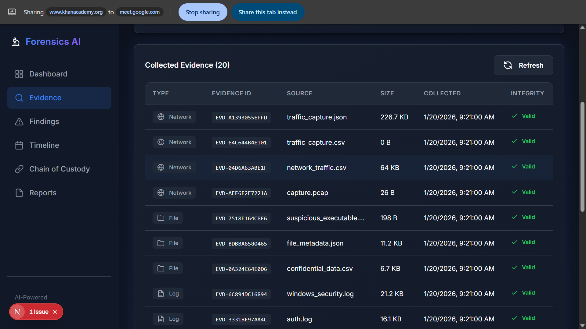
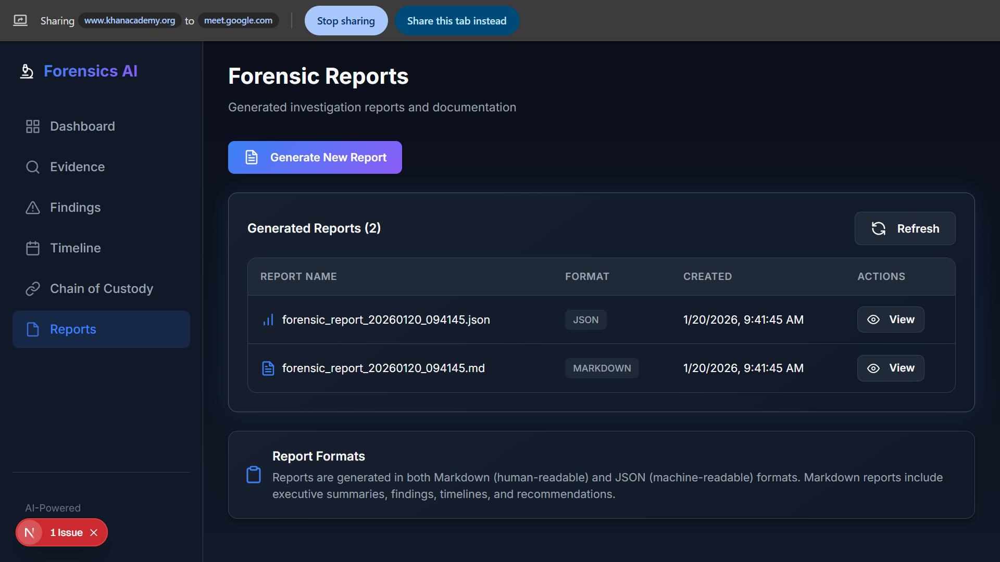
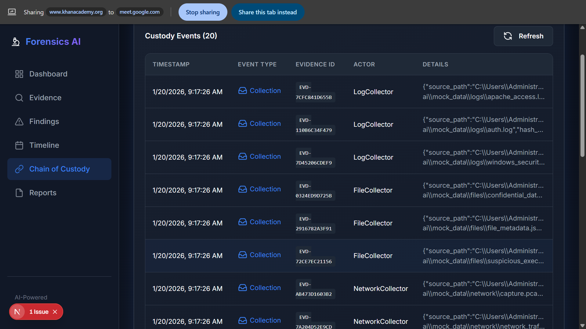

Project Overview
This platform automates digital forensics investigations by leveraging multi-agent AI systems for threat detection across various digital artifacts. It ensures evidence integrity through cryptographic chain of custody tracking, making findings legally admissible.
Project Screenshots

Investigation Dashboard
Central view of active investigations with severity indicators and case summaries.

Evidence Management
Chain of custody tracking with SHA-256 hash verification for each artifact.

AI Threat Analysis
Automated analysis results with threat classification and confidence scores.

Investigation Timeline
Visual timeline of evidence and activities for case reconstruction.
Key Features
- Multi-Agent AI Analysis: Automated threat detection across log files, executables, and network captures
- Chain of Custody: SHA-256 cryptographic hashing for evidence integrity verification
- Real-Time Dashboard: Investigation overview with severity breakdowns and timeline visualization
- Evidence Collection Pipeline: Automated ingestion with cryptographic verification
- Automated Report Generation: Comprehensive Markdown and JSON forensic reports
- 12+ API Endpoints: RESTful API for evidence management and analysis triggering